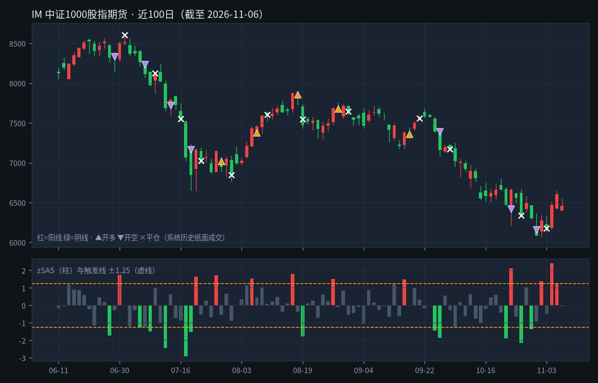
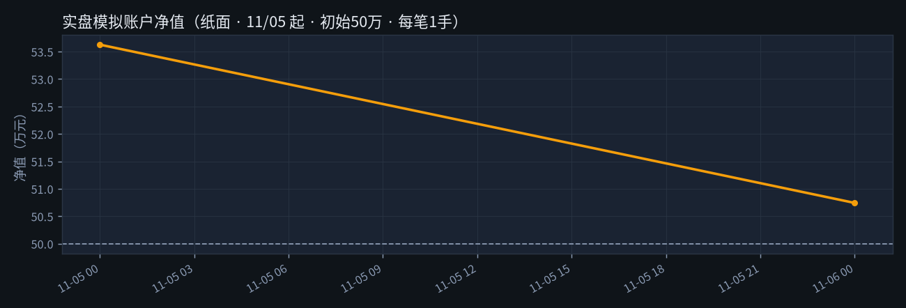
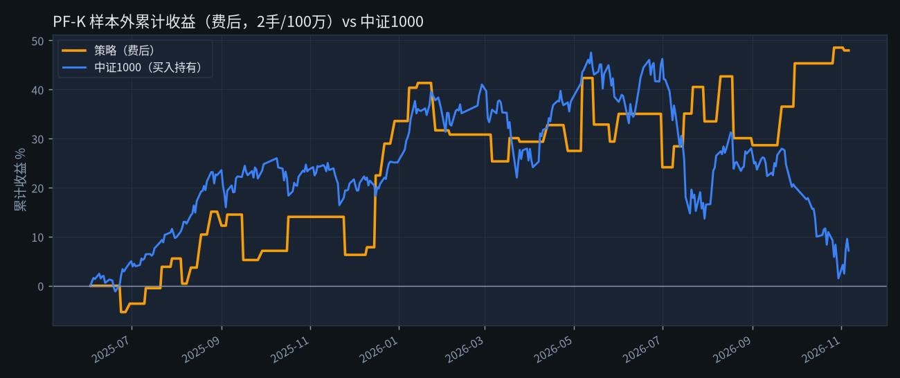

交易日 2026-11-06（周五） · 下一交易日 2026-11-09（周一）
主策略 PF-K（IM）纸面模拟账户运行中| 持仓 | 多 1 手，2026-11-05 开盘 6423.0 成交 |
|---|---|
| 止损价 | 6085.0（盘中触及即平） |
| 今日浮动 | +37.8 点（约 +0.76 万元/手，未扣费） |
| 最晚平仓 | 已持 2 天；最晚 2026-11-09（周一） 收盘前 平仓 |
IM（中证1000股指期货主连）今天开 6400.0、最高 6554.0、最低 6398.0、收 6460.8， 比昨天收盘 6605.0 跌 144.2 点（-2.18%）。开盘相对昨收 低开 205.0 点，盘中震荡走高，收阳线。

上：IM 近 100 个交易日 K 线和系统历史开平仓点；下：每日 zSAS，越过虚线就出信号。
今天收盘后算出 zSAS = -0.04，在 ±1.25 之间，不触发。
规则只有一条：次日开盘价成交。所以明早 9:25 集合竞价或 9:30 开盘用市价/对价跟进即可；止损价按你的实际成交价算。
明天没有新开仓指令。

| 当前净值 | 507,421 元 | 收益率 +1.48% · 最大回撤 -5.38% |
| 已实现 / 浮动盈亏 | +0 / +7,421 元 | 已平仓 0 笔 · 胜率 — · 已付费用滑点约 0 元 |
| 状态 | 方向 | 开仓日/价 | 平仓日/价 | 费用滑点(点) | 净盈亏(元) | 说明 |
|---|---|---|---|---|---|---|
| 持仓中 | 多 | 2026-11-05 / 6423.0 | 未平（今收 6460.8，止损 6085.0） | 0.7 | +7,421 | 已持2天/最多3天 |
口径：只跟主策略 PF-K（IM，每笔 1 手）。成交价=日线开盘价/止损价/第3天收盘价；费用=开·平昨万0.23（平今万2.3）+ 往返滑点0.4点；持仓中的浮盈已预扣平仓费用。纸面记账，非真实成交。

「样本外」= 2025-06-03 之后的数据，参数是在那之前就定死的，这段相当于「模拟实战」。图为 2手/100万 口径累计收益率，对比同期中证1000指数。
| 指标（样本外 2025-06-03 → 2026-11-06，费后） | 回测口径 2手/100万 | 重算 1手/50万 |
|---|---|---|
| 交易笔数 / 胜率 | 44 笔 / 61.4% | 44 笔 / 61.4% |
| 累计盈利 | +48.0 万元 | +24.0 万元 |
| 策略年化（单利口径） | +33.6% | +33.6% |
| 中证1000 同期年化 | +5.0% | +5.0% |
| 超额年化（策略−指数） | +28.6% | +28.6% |
| 2025年（6/3起）：策略 / 指数 / 超额 | +33.6% / +25.1% / +8.4% | |
| 2026年至今：策略 / 指数 / 超额 | +14.4% / -16.1% / +30.5% | |
「1手/50万」是把同一批成交按 1 手、50万本金重算：金额减半、收益率相同（因为仓位和本金同比例缩小）。年化=总收益÷年数（单利）。 数字由冻结参数实时重算。与存档 summary.json（2026-11-04）对照：存档 44 笔 / 胜率 61.4% / 超额年化 28.64%。
同一套指标用在 IC 上，但参数单独冻结：阈值 ±1.5、止损 1.5×ATR、最多拿 5 天。不计入上面的纸面模拟账户，仅供对照。
今日 IC 收 6545.8（-157.8 点）。持多中：2026-11-05 开 6515.0，止损 6196.4，最晚 2026-11-11（周三） 收盘前平。
样本外（2手/100万口径）：29 笔，胜率 58.6%，超额年化 vs 中证500 +14.6%。
| ATR | 平均真实波幅（14日），代表「这个品种平时一天大概波动多少点」。今天用于止损的 ATR = 234.5 点。 |
| zSAS | 系统的核心指标：今天「盘中走出来的涨跌」比过去 60 天平均水平高出几个标准差。±1.25 是开仓线。 |
| 样本外 | 定参数时没用过的数据。在样本外还能赚钱，才说明不是「拟合历史」。本系统切点 2025-06-03。 |
| 止损 | 预先定好的认错价格，价格碰到就平仓离场，控制单笔最大亏损。 |
| 对价 | 买入挂卖一价、卖出挂买一价，保证立刻成交。 |